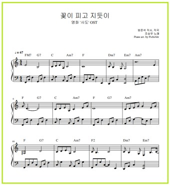
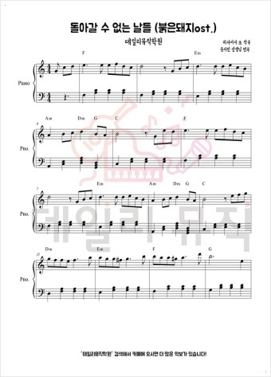

DW 악보
Home
피아노 악보
기타 악보
베이스 악보
드럼 악보
바이올린 악보
악보 맞춤 제작 채보
이 노래는 2015년 개봉해 624만명의 관객이 관람했던 유아인/송강호 주연의 ost입니다
재위기간 내내 왕위계승 정통성 논란에 시달리며 자신에게 과도한 부담을 지워주던 아버지 영조의 기대에 미치지 못한 것을 괴로워하다가 결국 정신 질환에 시달리게 되었고 결국 뒤주에 갇혀 8일만에 세상을 떠나야 했던 비운의 세자 사도의 심정을 멜로디에 담았습니다

구매
되돌아가기
원령 공주 모노노케히메(피아노)
붉은 돼지 ost 돌아오지않는 날들(피아노)
